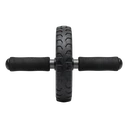

Ab Wheel Rollout
A core exercise rolling a wheel forward and back, training anti-extension of the spine.
Core · Ab Wheel · Intermediate


Muscles worked by the Ab Wheel Rollout
Primary
Secondary
Also called: abs, six-pack, rectus abdominis, abdominals, stomach muscles, transverse abdominis.
Equipment

Ab WheelAlso called: ab roller, ab wheel roller, power wheel.
How to do the Ab Wheel Rollout
- Kneel on the floor and grip the ab wheel handles shoulder-width.
- Brace the core hard so the lower back stays neutral.
- Roll the wheel slowly forward, extending the body as far as you can control.
- Stop before the hips sag or the back arches.
- Pull the wheel back to the knees by contracting the abs.
Form tips
- Brace the core before each rep — do not let the lower back arch.
- Build range gradually, stopping short of any hip sag.
- Drop to a wall stop if you cannot control the bottom.
At a glance
| Body part | Core |
|---|---|
| Category | Strength |
| Force type | Pull |
| Mechanic | Compound |
| Difficulty | Intermediate |
| Equipment | Ab Wheel |
| Goals | Hypertrophy, Strength |
| Tags | Core focus |
| MET | 6.0 (metabolic equivalent, for calorie estimates) |
| Unilateral | No |
| Bodyweight | No |
| Dataset id | ab-wheel-rollout |
Ab Wheel Rollout in German & Spanish
| German | Bauchroller |
|---|---|
| Spanish | Rueda Abdominal |
Descriptions, instructions and tips ship in all three languages in the JSON.
Related exercises
Exercise data (JSON)
The record below is exactly what exercises.json ships for this exercise — names, descriptions, instructions and tips in English, German and Spanish.
{
"id": "ab-wheel-rollout",
"name_en": "Ab Wheel Rollout",
"name_de": "Bauchroller",
"name_es": "Rueda Abdominal",
"description_en": "A core exercise rolling a wheel forward and back, training anti-extension of the spine.",
"description_de": "Eine Rumpfübung, bei der ein Rad nach vorn und zurück gerollt wird, um Anti-Extension der Wirbelsäule zu trainieren.",
"description_es": "Un ejercicio de core haciendo rodar una rueda adelante y atrás, que entrena la antiextensión de la columna.",
"category": "strength",
"force_type": "pull",
"mechanic": "compound",
"difficulty": "intermediate",
"equipment": "ab_wheel",
"body_part": "core",
"primary_muscles": [
"rectus_abdominis",
"transverse_abdominis"
],
"secondary_muscles": [
"anterior_deltoid",
"latissimus_dorsi",
"obliques",
"serratus_anterior"
],
"goals": [
"hypertrophy",
"strength"
],
"tags": [
"core_focus"
],
"is_unilateral": false,
"is_bodyweight": false,
"instructions_en": [
"Kneel on the floor and grip the ab wheel handles shoulder-width.",
"Brace the core hard so the lower back stays neutral.",
"Roll the wheel slowly forward, extending the body as far as you can control.",
"Stop before the hips sag or the back arches.",
"Pull the wheel back to the knees by contracting the abs."
],
"instructions_de": [
"Knie dich auf den Boden und greife die Griffe des Bauchrollers schulterbreit.",
"Spanne den Rumpf fest an, damit der untere Rücken neutral bleibt.",
"Rolle das Rad langsam nach vorn und strecke den Körper so weit, wie du kontrollieren kannst.",
"Stoppe, bevor die Hüfte durchhängt oder der Rücken überstreckt.",
"Ziehe das Rad zurück zu den Knien, indem du die Bauchmuskeln anspannst."
],
"instructions_es": [
"Arrodíllate en el suelo y agarra las asas de la rueda a la anchura de los hombros.",
"Activa fuertemente el core para que la zona lumbar quede neutra.",
"Rueda la rueda lentamente hacia adelante, extendiendo el cuerpo lo más lejos que puedas controlar.",
"Detente antes de que las caderas se hundan o la espalda se arquee.",
"Tira de la rueda de regreso hacia las rodillas contrayendo los abdominales."
],
"tips_en": [
"Brace the core before each rep — do not let the lower back arch.",
"Build range gradually, stopping short of any hip sag.",
"Drop to a wall stop if you cannot control the bottom."
],
"tips_de": [
"Spanne den Rumpf vor jeder Wiederholung an — der untere Rücken darf nicht überstrecken.",
"Erweitere die Reichweite schrittweise, stoppe vor jeglichem Hüftdurchhang.",
"Nutze einen Wand-Stopp, wenn du den unteren Punkt nicht kontrollieren kannst."
],
"tips_es": [
"Activa el core antes de cada repetición — no dejes que la lumbar se arquee.",
"Aumenta el rango progresivamente, parando antes de que las caderas se hundan.",
"Usa un tope contra la pared si no puedes controlar la posición baja."
],
"met": 6.0,
"images": {
"flat": {
"start": "images/flat/ab-wheel-rollout-start.webp",
"peak": "images/flat/ab-wheel-rollout-peak.webp"
}
}
}Fetch just this exercise
const { exercises } = await fetch(
"https://exercise-dataset.com/exercises.json"
).then(r => r.json());
const ex = exercises.find(e => e.id === "ab-wheel-rollout");Free for personal and commercial in-app use with attribution (“Exercise data by RepDB”) — see the license and ready-made attribution snippets. Redistributing the data as a dataset or API is not permitted.